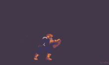

Wildfire Haymaker · enemy impact preview
Approved Branch attack · enemy contact and knockback · combat unchanged
The approved 33-frame animation is unchanged. A Forest Guardian now stands within glove range: the punch connects on frame 12, flashes at contact, and sends the enemy backward into its existing falling reaction while the fire-falcon releases. Use Previous / Next or Quarter speed to inspect the impact. This is the preview only; live combat is unchanged.
Loading animation…


Compare the animation against the approved reference above. This is a new motion candidate, not an approved combat animation. Use the frame buttons to inspect the wind-up, extension and recovery.